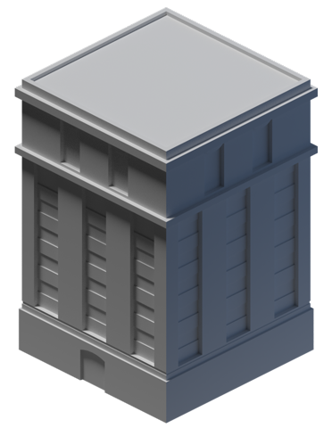

União
- Fornecer transporte coletivo interestadual
- Garantir assistência técnica e financeira para estados e municípios
- Promover a implantação de projetos de transporte coletivo nas regiões metropolitanas
- O Denatran e o Contran são responsáveis pela normatização de regras, procedimentos e sinalizações a serem aplicadas
Estado
- Fornecer transporte coletivo intermunicipal e metropolitano
- Propor política tributária de incentivos a Mobilidade Urbana
- Os Detrans são responsáveis pela regulamentação de documentos, habilitações de condutores além de educação e fiscalização

Município
- Planejar, executar e avaliar a política de mobilidade urbana na cidade
- Elaborar Planos de Mobilidade Municipais, priorizando modais não motorizados e coletivos
- Fornecer transporte coletivo urbano
- Regulamentar o transporte urbano individual
- Ciretrans são os responsáveis pela execução das atividades dos Detrans nos municípios
Operadores
- União, estados e municípios podem contratar por lei empresas para gerir e fiscalizar o sistema.
- A operação também pode ser cedida a concessionários ou permissionários públicos ou privados através de licitação
- Nos termos do Código de Defesa do Consumidor, os operadores são fornecedores de serviço. Suas obrigações são as mesmas que as de fornecedores de quaisquer serviços.
- Eles devem garantir um serviço adequado, eficiente, seguro e contínuo (porque é um serviço essencial), além de prestar todas as informações sobre esses mesmos serviços, buscando continuamente criar meios eficientes de controle de qualidade, de segurança dos serviços e mecanismos alternativos de solução de conflitos de consumo.
- Parâmetros de prestação dos serviços como: investimentos, expansão, remuneração e indicadores de qualidade devem estar previstos em lei e no contrato.
- Secretarias e gestores são responsáveis por garantir ao usuário informação e canais de comunicação
Tribunais de contas
- São órgãos auxiliares dos Poderes Legislativos. Podem sugerir preços para as passagens do transporte público municipal e suspender serviços e aumentos de preço se encontrarem irregularidades.
Ministério Público
- O Ministério Público Estadual é um poder público autônomo que pode intervir em situações municipais relativas ao transporte público quando acionado.
- Pode entrar com ações na Justiça contra o município ou o estado em casos que sejam potencialmente prejudiciais ao consumidor (alteração de disponibilidade de linhas, aumento no valor da passagem) e em casos de suspeita de desrespeito às leis no sistema de transporte público ou em concessões.